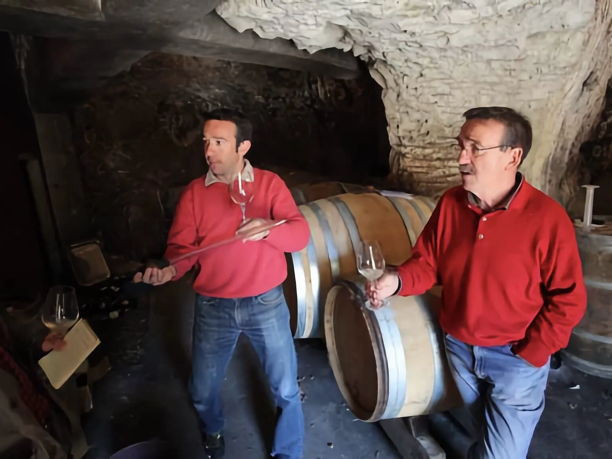

Bernard Baudry: The Real Deal in Chinon

If you want to understand why people obsess over the Loire Valley, you have to start with Bernard Baudry. He didn't inherit a massive empire. In 1972, he started with a tiny patch of land and a very simple goal: make wine that actually tastes like the dirt it grew in.
From a "Handkerchief" to a Legend
Bernard famously started with a vineyard so small he called it a "handkerchief." He wasn't interested in making polished, commercial bottles. Instead, he spent decades hunting down specific parcels of land across Chinon.
He looked for the difference between gravelly soils, which make a wine bright and snappy, and clay-limestone soils, which give the wine its muscle. By the time his son Matthieu joined the business in 2000, the Baudry name was already shorthand for "the gold standard" of Cabernet Franc.
Working the Old Way
Long before "organic" was a trendy buzzword, the Baudry family was already doing the hard work. They ditched the synthetic chemicals and herbicides decades ago. Everything is harvested by hand, and they rely on the natural yeasts already living on the grapes to start fermentation.
They also skip the filters. When you pour a glass of Baudry, you are getting the full, unfiltered character of the vineyard. It is honest, rustic, and incredibly elegant all at once.
The Perfect Entry Point: Les Granges
If you are new to the world of Chinon, Les Granges is the bottle to grab. It is 100% Cabernet Franc and designed to be pure, joyful, and easy to drink. It doesn't need ten years in a cellar to be good. It is bright, earthy, and exactly what we want to drink on a Tuesday night.
Make it a Meal: The Baudry Burger
Cabernet Franc has a signature herbal streak that can be tricky to pair, but it loves anything with a little char.
- The Main: Grill up a high-quality beef burger topped with caramelized onions and a slice of sharp goat cheese. The acidity in the wine cuts through the fat of the burger, while the earthy goat cheese plays off the rustic character of the Chinon.
- The Side: Toss some potatoes in duck fat and rosemary and roast them until they are crispy. That rosemary will bridge the gap between the herbal notes in the wine and the richness of the meal.
Grab a Bottle
We have the Baudry lineup on the shelves right now. Whether you are a longtime fan or just curious about what "real" Cabernet Franc tastes like, stop by the shop and we will help you find the right bottle.